Ekranlar
Panelin tamamı
Soldaki pencerede seçtiğiniz ekran açılır. Görüntülerin tamamı uygulamanın güncel sürümünden alınmıştır.


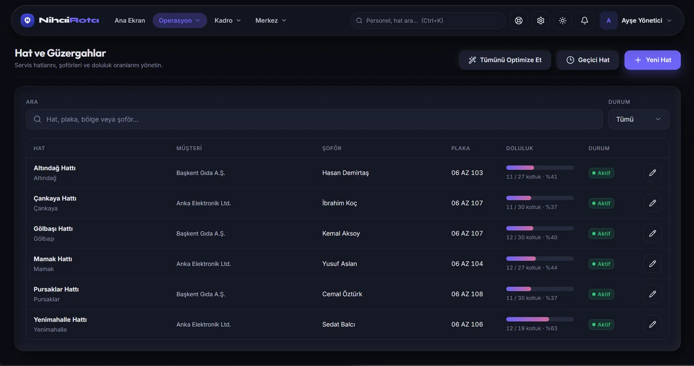
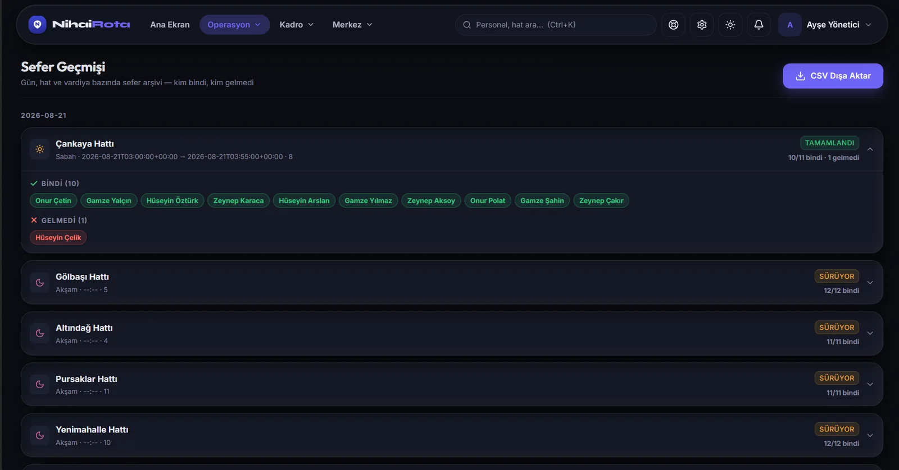
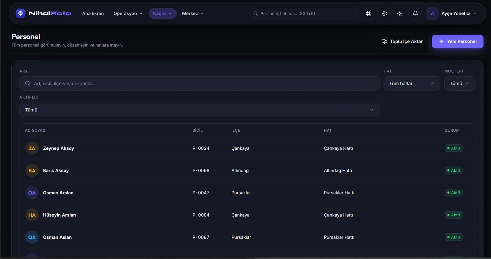
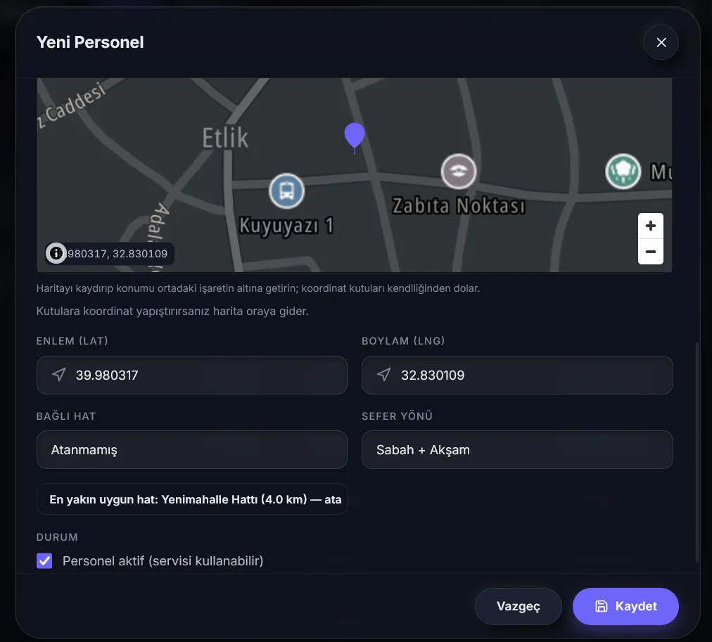
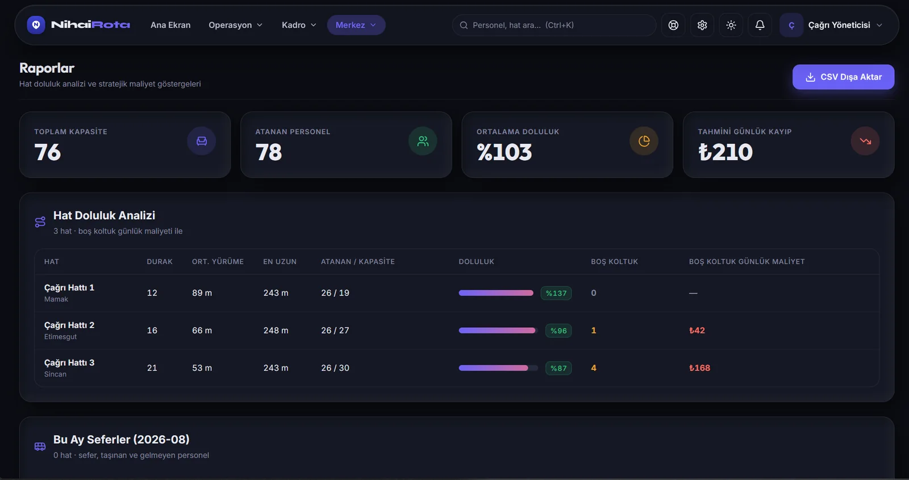
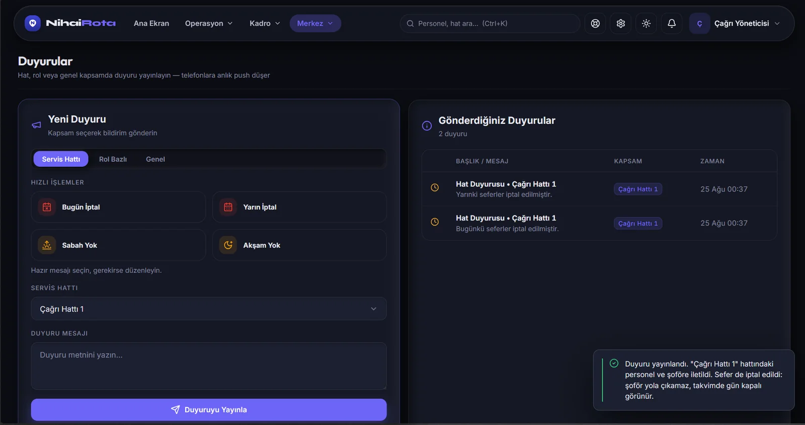
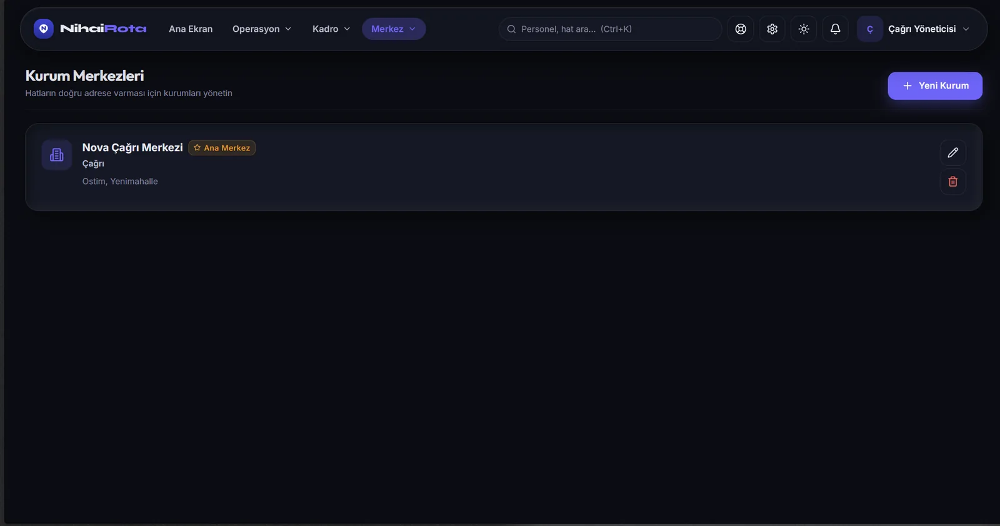
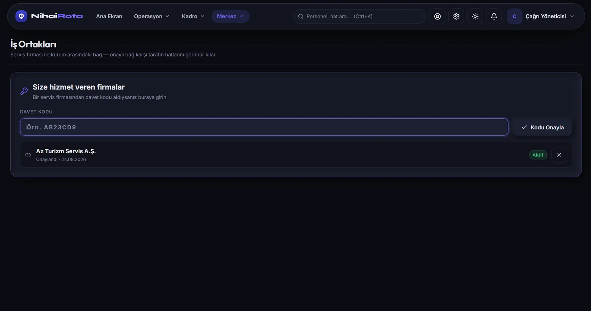
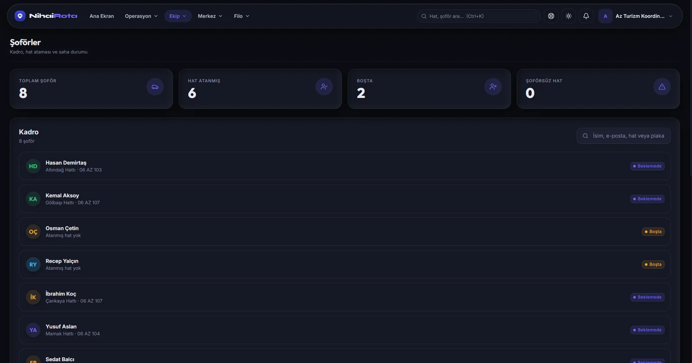
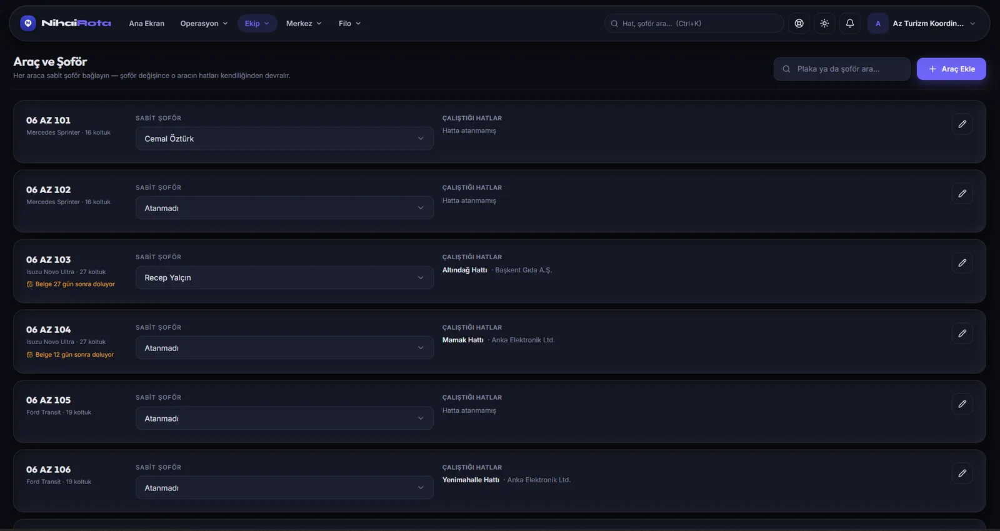
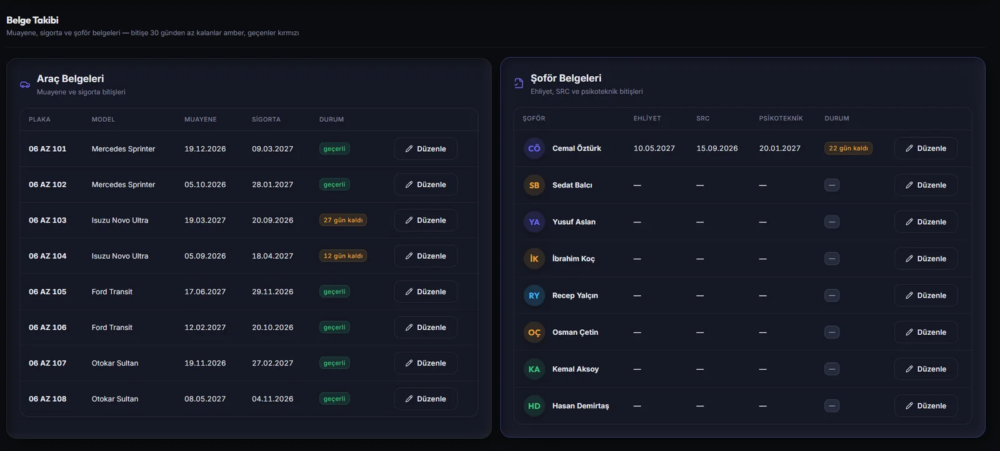
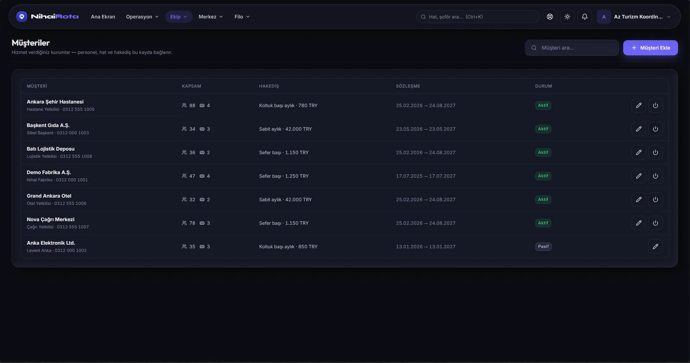
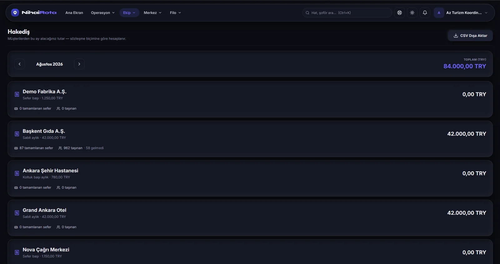
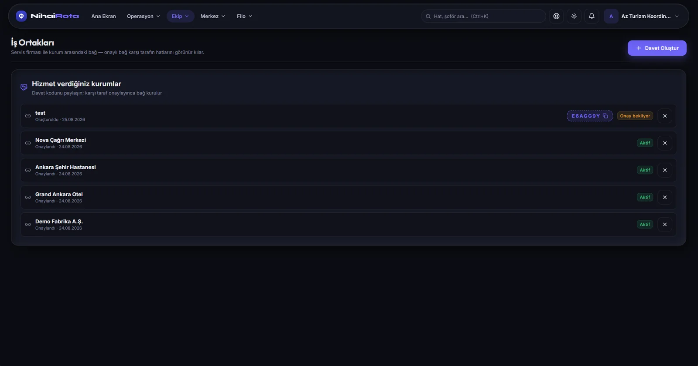
İki taraf, tek sistem
Servis firması davet kodu üretir, kurum onaylar. Onaydan sonra ilgili hatlar iki panelde de canlı görünür.
Neden tarayıcıda
Kurulum yok, bakım yok
Kurulum yok
Tarayıcı yeterli. Güncellemeler yayınlandığı anda herkeste geçerli olur, bilgisayarlara kurulum yapılmaz.
Rol bazlı erişim
Yönetici, koordinatör ve çağrı yöneticisi yalnız kendi yetkisindeki veriyi görür; kurumlar birbirinin verisine erişemez.
CSV dışa aktarım
Sefer geçmişi, raporlar ve hakediş tabloları muhasebe ve İK süreçleriniz için dışa aktarılır.
Mobil ile aynı veri
Panelde yapılan değişiklik şoförün ve personelin telefonuna anında yansır; ayrı bir aktarım adımı yoktur.
Şoförler paneli kullanmaz
Saha tarafı tamamen mobil uygulamada yürür: rota, navigasyon ve yoklama.